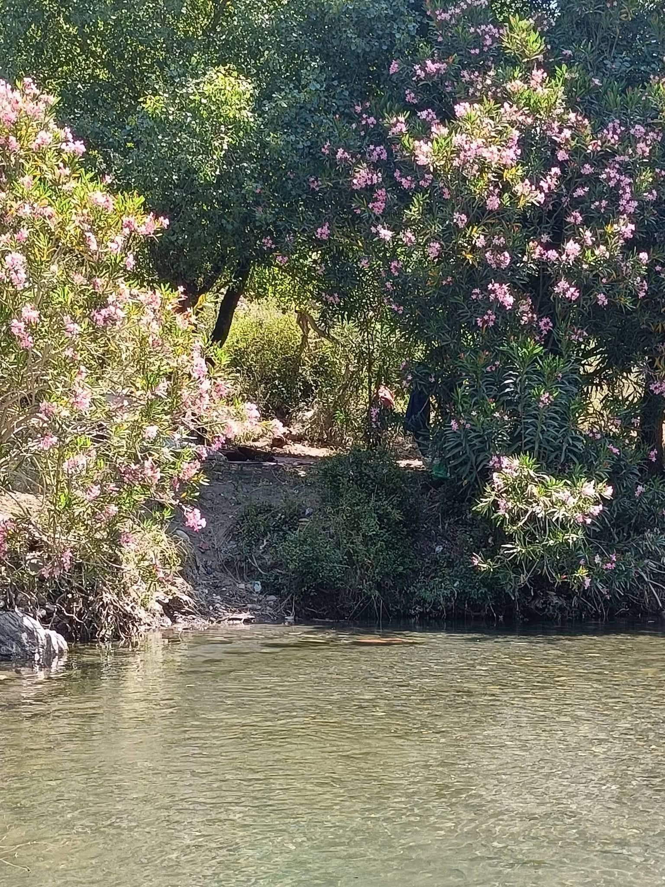

Tout ce que tu as commencé
L’amour est une rivière
qui cherche son chemin
dans nos silences,
un fleuve sans rivage
où deux âmes apprennent
à naviguer.
Tu es cette nuit d’été
où les étoiles semblent
plus proches
de la terre,
ce parfum de jasmin
porté par le vent
qui trouble l’âme
avant même
de toucher la peau.
Tu es cette étoile
lointaine
qui éclaire encore
mes chemins obscurs,
et pourtant la distance
entre nos âmes
a la profondeur
silencieuse
de l’océan.
.
Ta voix
était une caresse,
un vin sombre
versé dans mes veines ;
et chacun de tes silences
avait la violence tendre
d’un baiser
qui n’arrive jamais.
Et pourtant tu n’es pas là.
Voilà le cruel paradoxe :
plus tu t’éloignes,
plus ta présence
prend de la place.
Tu deviens le parfum
d’une fleur absente,
le goût d’un fruit
que je n’ai pas mordu,
la chaleur d’un soleil
dont la lumière
arrive après la nuit.
Voilà ce qui me condamne :
je ne souffre pas
seulement
de ne pas t’avoir —
je souffre
de sentir encore
tout ce que ta présence
avait commencé.
Djamel Metref
At Yenni le 6 septembre 2026
← Tous les poèmes
Tout ce que tu as commencé
Amour et désir · Absence et manque